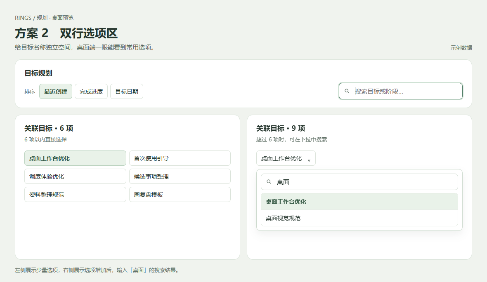
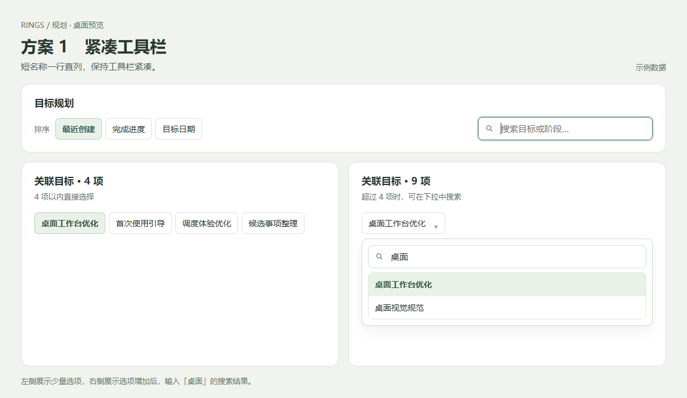
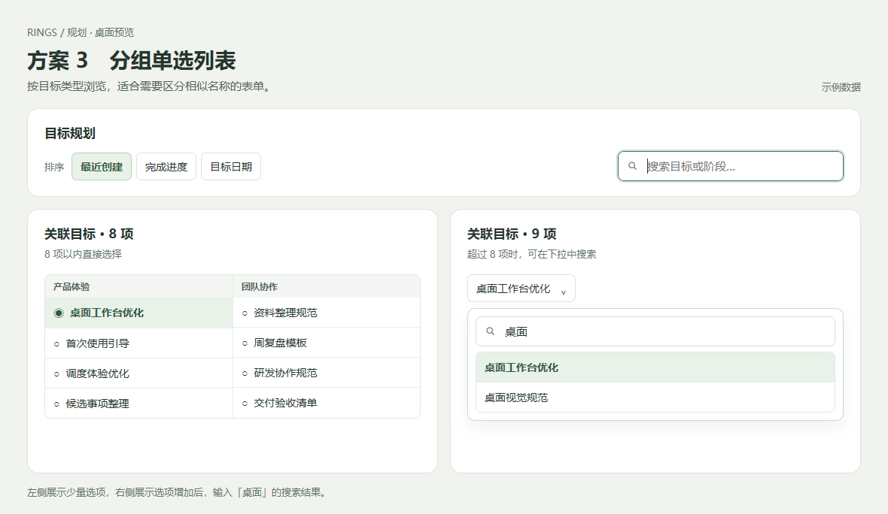

RINGS 搜索与选择优化记录
用户反馈与原因
规划页局部搜索框有内外两层边框，和顶部搜索框样式不一致。局部搜索框的外层已经有圆角边框，内层输入框仍保留浏览器默认边框。统一图标、输入区和焦点样式，聚焦时高亮外框，保留各自的搜索范围。
下拉选择多一次展开操作。用户希望按实际选项数量切换，少量选项直接选，达到阈值后使用下拉，且所有下拉都能搜索。
方案 2 · 双行直列（已选定）
6 项以内直列，名称稍长时可排两行。第 7 项起使用可搜索下拉。规划页的 3 个排序选项可直接平铺。这一方案兼顾关联目标等较长名称的可读性和工具栏高度。

方案 1 · 紧凑工具栏
4 项以内单行直列，第 5 项起使用可搜索下拉。适合优先级和短名称状态等选项。

方案 3 · 分组单选列表
8 项以内按已有类别分组展示，第 9 项起使用可搜索下拉。适合需要按类别浏览的表单，占用的空间更多。

效果图使用示例数据。此页记录设计决策，实际验收结果在审查打卡页填写。